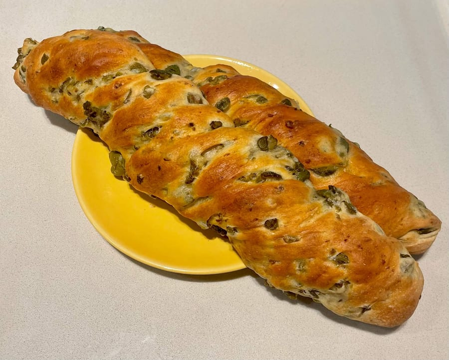
01
Il pane
Pane fresco di diverse tipologie, carasau e guttiau sardi, filoni alle olive e alle noci, grissini e crackers fragranti.
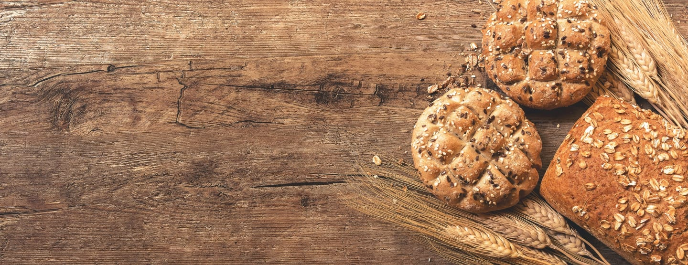
4,6 · 392 recensioni
Il pane sardo di Via Marghera
Forno e pasticceria di famiglia dal 1976, in zona Wagner. Pane fresco ogni giorno, carasau e guttiau sardi, focacce, pizzette e dolci — con il corner caffetteria per fermarsi.
Le nostre radici
Onoriamo la nostra terra d'origine: la Sardegna. Per questo ogni giorno trovi il pane carasau — così sottile da chiamarsi «carta da musica» — e il pane guttiau, preparati con rispetto per la tradizione.
Accanto, il pane fresco di diverse tipologie, i grissini e i crackers fragranti: la stessa arte, sfornata dalla mattina presto.
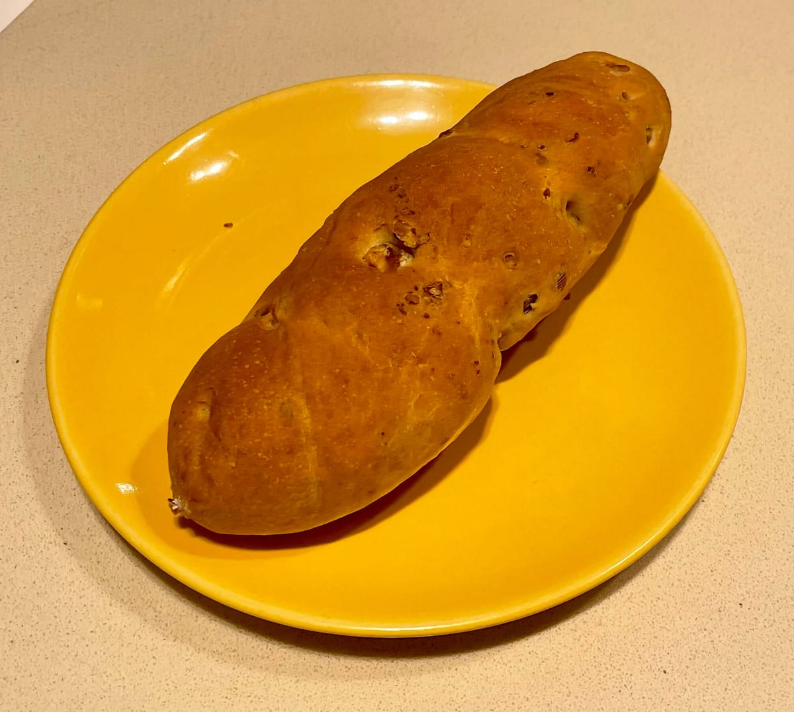
Cosa trovi da noi

Pane fresco di diverse tipologie, carasau e guttiau sardi, filoni alle olive e alle noci, grissini e crackers fragranti.
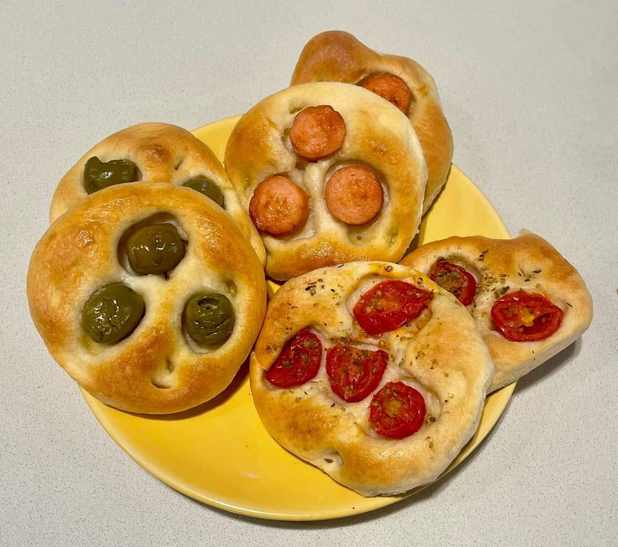
Focacce e focaccine, pizze e pizzette scrocchiarelle, torte salate, calzoni e sfiziosità: perfette per una pausa pranzo a ogni ora.
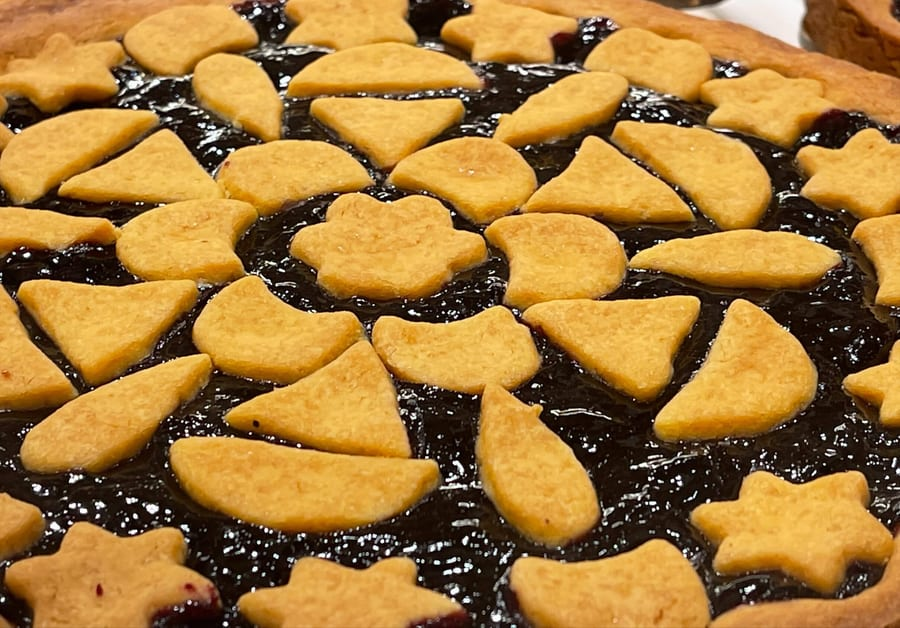
Pasta frolla artigianale, brioches, croissant e la cremonese, la torta caprese e la torta di carote. E per le feste panettone, colomba e pastiera.
La famiglia Sanna
È storico il panificio di Via Marghera: dal 1976 la nostra famiglia — prima con Ovidio ed Antonia, poi con Ivan e William — porta avanti tradizione ed innovazione, offrendo prodotti freschi, gustosi e genuini ogni giorno. Perché questo mestiere è un'arte, e noi ci mettiamo tutta la nostra passione.
Il corner caffetteria
Puoi gustare tutto sul posto, dalla mattina presto fino a sera, nel nostro accogliente corner caffetteria coi tavolini — anche in compagnia dei più piccoli. E se sei di fretta: chiama, ordina, ritira!
Ordina: 02 481 2072In vetrina
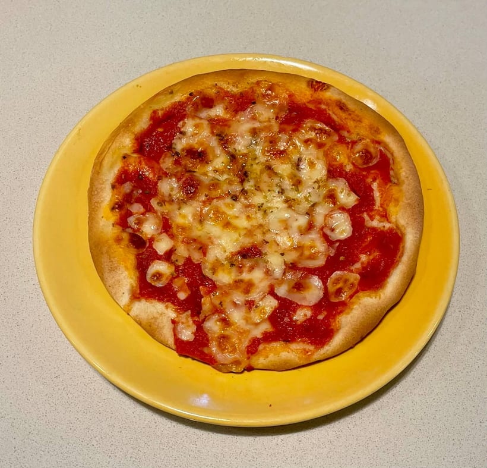
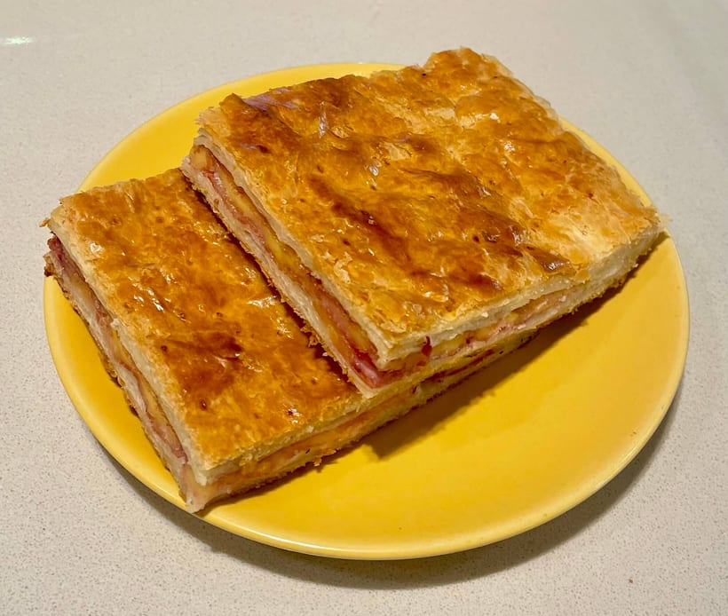
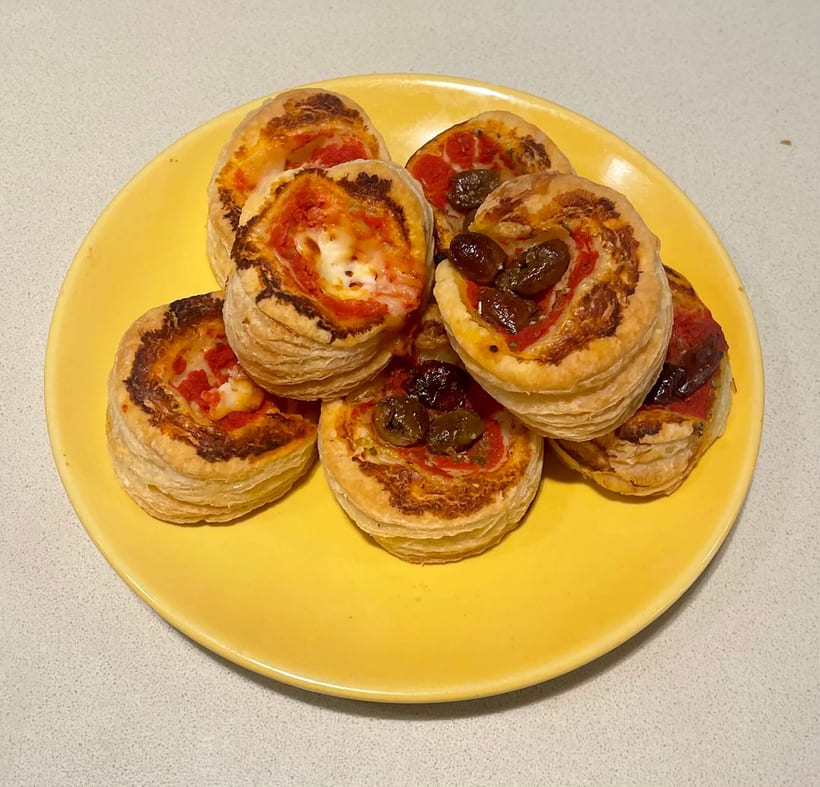
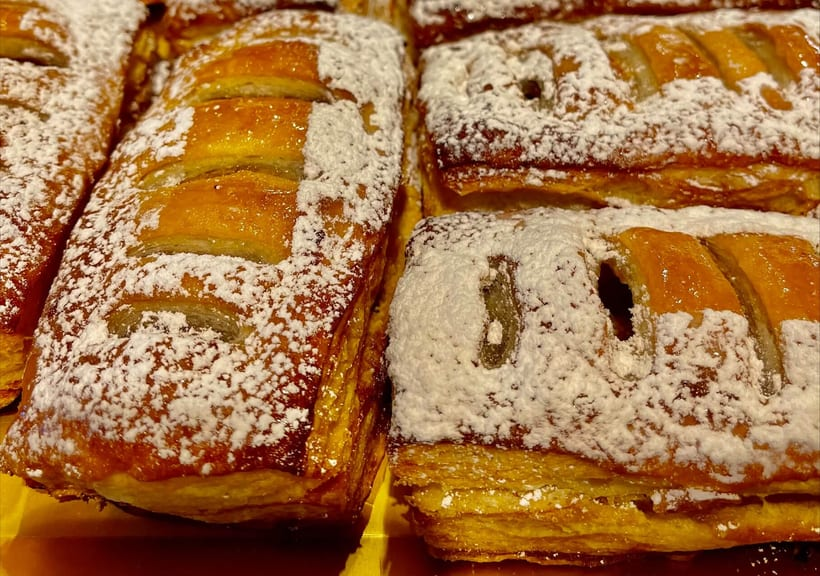
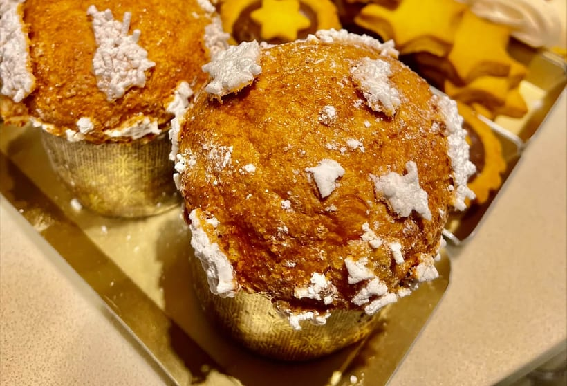
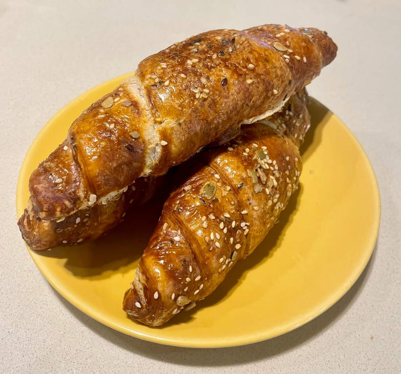
Dicono di noi
«Panificio Sanna è uno di quei posti che se sei di Milano lo conosci per forza. Siamo in zona Marghera, e qui tutti sanno chi sono i fratelli Sanna. E con ottime ragioni.»
Francesca P. · Local Guide
«Panificio di riferimento in zona Wagner, il paradiso dei panificati! Le pizzette sono belle scrocchiarelle, la focaccia bianca ha un impasto che si scioglie in bocca.»
Lusio · Local Guide
«Il personale è molto accogliente e simpatico. Pizzette sfoglia e focaccia con crescenza ottime. Il dolcetto tipo pan gocciolo spaziale: mi farei un'ora di viaggio solo per quello.»
Happee A. · Local Guide
«Uno dei miei panifici preferiti. Tutto quello che prendo da loro è delizioso. La loro brioches alla crema, farcita al momento, è qualcosa di speciale.»
Franco A. · Local Guide
«Un'ampia selezione di prodotti da forno, dolci e salati, di eccellente qualità. C'è anche un'area interna coi tavolini, ideale per una pausa caffè, anche coi più piccoli.»
F. Digre · Local Guide
Dove & orari
Via Marghera 37, 20149 Milano · nel cuore del «Marghera Food District», a due passi da Wagner e De Angeli
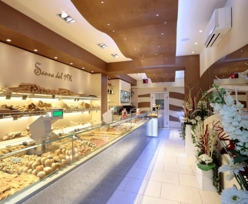
…
| Lunedì | 07:30 – 19:30 |
| Martedì | 07:30 – 19:30 |
| Mercoledì | 07:30 – 19:30 |
| Giovedì | 07:30 – 19:30 |
| Venerdì | 07:30 – 19:30 |
| Sabato | 07:30 – 14:00 |
| Domenica | Chiuso |
Domande frequenti
Sì. Onoriamo le nostre radici sarde: ogni giorno trovi pane carasau e pane guttiau, preparati con rispetto per la tradizione, accanto al pane fresco di diverse tipologie.
Dal lunedì al venerdì 07:30–19:30, il sabato 07:30–14:00. La domenica siamo chiusi.
Sì: abbiamo un corner caffetteria coi tavolini dove gustare pane, salato e dolce dalla mattina fino a sera. Se sei di fretta puoi chiamare, ordinare e ritirare.
Sì: panettone, veneziana, panettone gastronomico, chiacchiere, tortelli, pan meino, colomba pasquale e pastiera.
In Via Marghera 37 a Milano, zona Wagner/De Angeli. Per ordini chiama lo 02 481 2072.